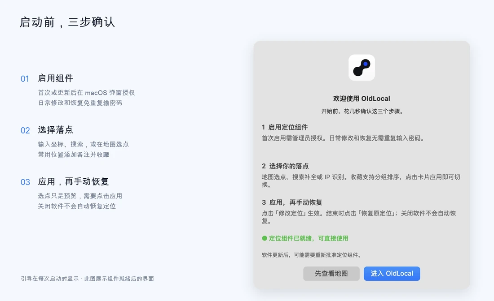
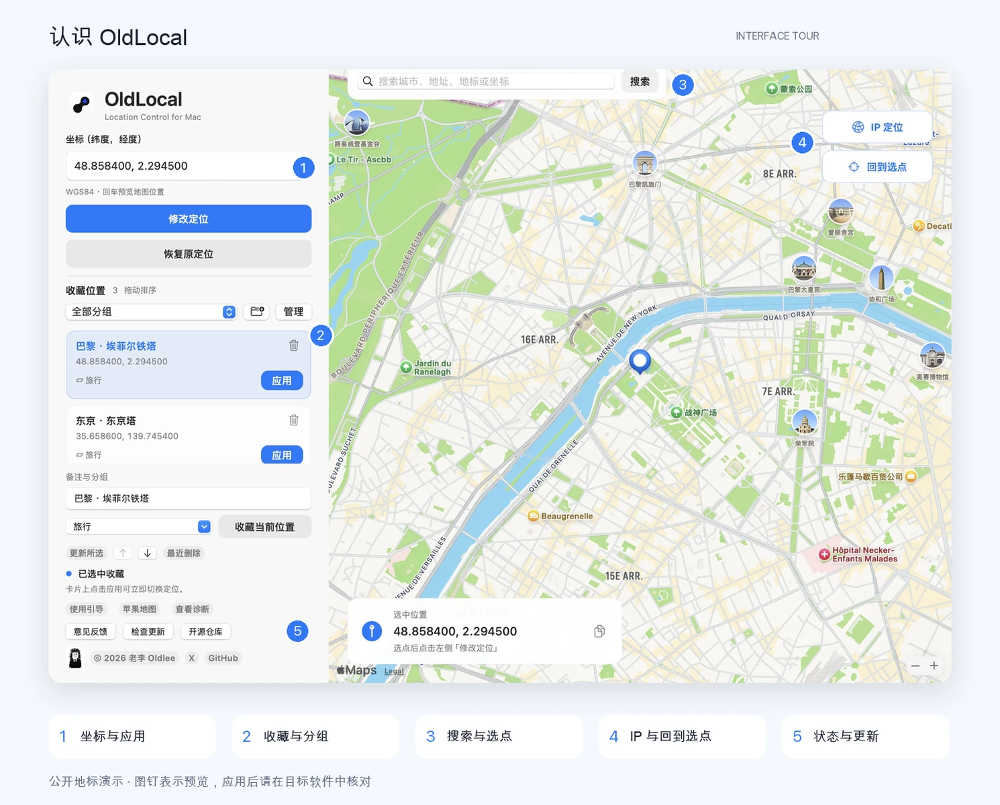
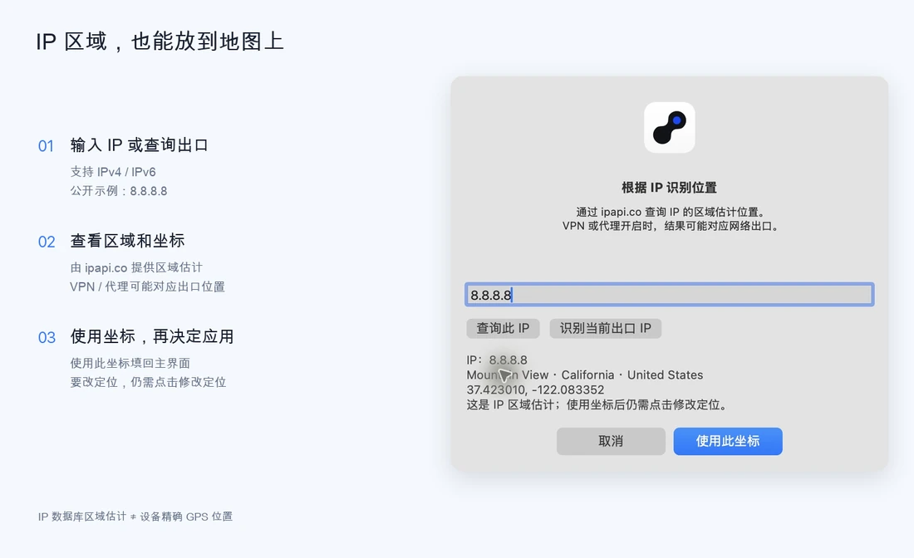
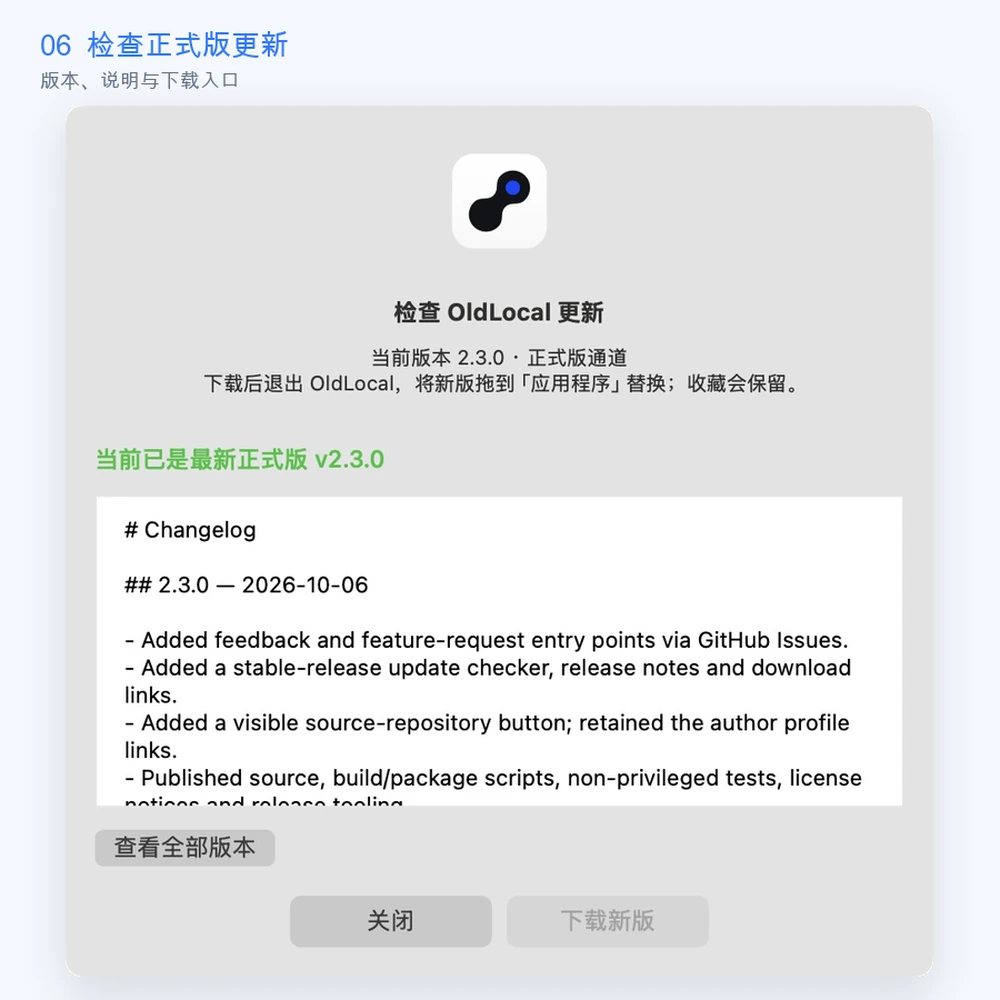

01 / INSTALL
下载正确的应用包。
打开 最新 Release，在 Assets 中找到 OldLocal-macOS-arm64.zip。这是可直接使用的应用；Source code 是源码。
- 解压 ZIP，将 OldLocal 拖进 Finder「应用程序」。
- 从「应用程序」打开，组件要求路径为
/Applications/OldLocal.app。 - 在引导中点击「启用定位组件」，完成 macOS 管理员授权。
- 组件就绪后进入主界面，日常修改与恢复免重复输入密码。

每次启动都会显示引导。首次安装或软件签名更新后可能需要批准组件，软件不读取或保存密码。选择「先查看地图」可以先浏览，组件未就绪时不能修改或恢复。
02 / PICK A PLACE
有坐标，整行粘贴。
没坐标，就点地图。
一个框输入 纬度在前、经度在后 的 WGS84 坐标。例如埃菲尔铁塔：
48.858400, 2.294500回车预览，核对地点后再应用。支持中文逗号、两侧空格和负号。纬度需在 −90～90，经度需在 −180～180；输入顺序颠倒有时仍合法，所以要看地图确认。
城市、地址或地标，也可以搜索
地图上方输入两个或更多字符，选择自动补全建议；也可点「搜索」或回车。地图与坐标一起更新。拖远了，点「回到选点」把视野拉回。
也可以拖动、缩放地图，然后直接点击落点。搜索和地图依赖 Apple MapKit，需要网络；其他坐标系可能有偏移，当前没有自动坐标系转换。
03 / APPLY & CHECK
预览正确，再点击应用。
选点、回车预览、搜索与 IP 查询不会直接修改系统。写入入口是主按钮「修改定位」，或收藏卡片的「应用」。等待操作完成，检查左下角状态。
| 状态 | 意味着什么 |
|---|---|
| 定位已修改 | 参数读回与服务刷新已确认，继续在目标应用核对。 |
| 修改未完成，参数已回退 | 本次不视为成功，之前参数已回退。打开「查看诊断」。 |
| 系统未允许更新定位 | 刷新被拒绝，本次没有写入新的坐标。 |
| 定位组件需要启用 | 打开引导，批准首次安装或新版组件。 |

04 / KEEP YOUR PLACES
给位置一个名字，
下次随手取用。
- 选好位置，填备注，选择或输入分组。
- 点「收藏当前位置」，新增条目。
- 点击卡片填回字段；卡片「应用」直接切换。
- 修改原条目，用「更新所选」；上下箭头调整排序。

分组可以管理，删除也有后路
列表上方下拉筛选，文件夹加号新建分组。「管理」重命名或删除；删除分组会把收藏移到「未分组」，备注、坐标、ID 与相对顺序保留，最近删除中的分组也同步。
「未分组」不能删除或重命名。「撤销此操作」只在管理窗口内恢复最近一次分组操作，关闭窗口后记录结束。
垃圾桶和右键均可删除收藏，从「最近删除」恢复。删除收藏或分组不会改变已经应用的定位。收藏在本机，替换应用不会删除这些文件。
05 / IP LOOKUP
看见网络出口的区域。
右上「IP 定位」，输入 IPv4 / IPv6，或手动点击「识别当前出口 IP」。查询由 ipapi.co 提供。得到区域与估计坐标后，「使用此坐标」填回，再决定是否修改定位。

06 / RESTORE
用完，手动恢复。
点击「恢复原定位」，等待结果并在目标应用核对。「参数已恢复，刷新待确认」表示参数恢复已核对，但服务刷新未完全确认，需要继续检查地图和诊断。
/var/db/mac-location-lab/original.json 来排错。需要卸载时
- 先恢复原定位并核对。
- 菜单「OldLocal → 移除定位组件…」，按系统提示授权。
- 退出应用，再从 Finder 删除 OldLocal。
组件移除保留收藏与原备份。恢复失败时保留备份和诊断，到 Issues 反馈。
07 / STAY IN TOUCH
下一次更新，
也在同一个地方。
应用「检查更新」显示最新正式版和说明。有新版时下载，退出 OldLocal 后手动替换；重新打开可能需批准组件。当前不自动安装。

「意见反馈」打开 GitHub 问题或建议模板，由你自己提交。预填版本与系统信息，不自动附带收藏、坐标或诊断；公开提交前检查截图中的个人信息。
下载 OldLocal